저승식당 같은 웹툰 추천
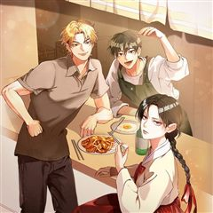
저승식당 · ASSAM / 오랑 / 화정 / 형상준
저승식당 재밌게 봤다면 이 웹툰들도 좋아할 거예요. 같은 장르이면서 옴니버스, 음식&요리, 힐링 같은 요소가 겹치는 작품을, 겹치는 요소가 많은 순서로 20개 골랐어요.
2026-10-06 기준 · 네이버웹툰·카카오웹툰·레진코믹스 · 성인 작품 제외
내 취향으로 직접 골라 추천받기 →-
1
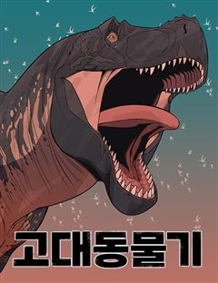
네이버웹툰고대동물기
모든 생명은 무엇을 위해 살아가고, 무엇을 위해 죽어갈까? 세상으로부터 버려진 채 늙어 죽어가는 티라노사우루스 한 마리. 그런 그에게 죽기 전에 이뤄야 할 꿈이 생겼다. 이 땅에 살고, 이 땅에 죽어간 생명들의 기묘하고도 특별한 이야기
옴니버스힐링드라마네이버웹툰에서 보기 → -
2
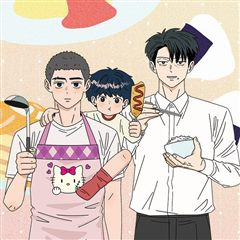
카카오웹툰오늘 메뉴 추천 좀!
아버지가 어머니를 살해한 사건으로 갑자기 모든 양육자를 잃은 태호와 지호 남매. 감당하기 힘든 현실에 처했지만 태호는 어린 동생 지호를 위해 집밥의 고수가 되기로 한다. 입 짧기로 소문난 사회복지사 규진은 이들의 소식을 듣고 그대로 방치할 수 없다고…
음식&요리힐링드라마카카오웹툰에서 보기 → -
3
 카카오웹툰
카카오웹툰괴식식당
취두부, 두리안, 수르스트뢰밍의 시대는 갔다. 들어는 봤는가? 문자 그대로 죽을 만큼 맛없는 요리! 하지만 능력이 오른다!? 전 차원 최고(?)의 맛을 자랑하는 테라의 요리가 최강의 용사, 유승우의 손에 의해 평화로운(?) 지구를 찾아온다. 인내하라…
음식&요리힐링드라마카카오웹툰에서 보기 → -
4
 네이버웹툰
네이버웹툰호붕빵 아저씨
귀여운 디저트를 판매하고 싶은 꿈을 가진 호랑이, 맹호석. 한때는 무서운 조직의 일원이었지만, 손을 씻고 시작한 건… 다름 아닌 붕어빵 장사! 하지만 새 삶도 결코 순탄하지 않은데… 선입견과 편견이 가득한 시선 속에서, 호석은 과연 동네 주민들과 잘…
음식&요리힐링드라마네이버웹툰에서 보기 → -
5
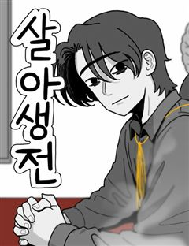
네이버웹툰살아생전
사람이 죽으면 저승사자가 찾아와 이름을 세번 부른다. 마중 나온 저승사자 와 망자가 삼도냇가에 이르면 의령수라는 아주 큰 나무가 있는데, 그 밑에 작은 식당 '살아생전'이 있다. 망자가 생전에 가장 먹고 싶었던 음식과 그곳 으로 안내하는 저승사자 '…
음식&요리힐링드라마네이버웹툰에서 보기 → -
6
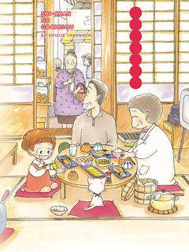
레진코믹스시쨩의 진수성찬
부모님의 사랑을 듬뿍 받고, 이웃 사람들의 따뜻한 보살핌을 받으며 건강하게 자라는 시짱의 식탁에는 언제나 매력적인 메뉴가 가득하다. 카레라이스, 누룽지밥, 안코나베, 구이... 가족과 함께 먹는 맛있는 한 권, 드셔보세요.
음식&요리힐링드라마레진코믹스에서 보기 → -
7
![시쨩의 진수성찬 [단행본] 표지](../../thumbs/lezhin/7011785487678389.jpg) 레진코믹스
레진코믹스시쨩의 진수성찬 [단행본]
부모님의 사랑을 듬뿍 받고, 이웃 사람들의 따뜻한 보살핌을 받으며 건강하게 자라는 시짱의 식탁에는 언제나 매력적인 메뉴가 가득하다. 카레라이스, 누룽지밥, 안코나베, 구이... 가족과 함께 먹는 맛있는 한 권, 드셔보세요.
음식&요리힐링드라마레진코믹스에서 보기 → -
8
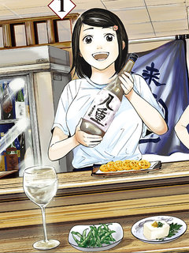
레진코믹스야에의 술 탐방기 ~ 일본의 고향 100경 ~
뒷골목 사케바 '오켄나사이'의 주인 아사히 야에. 실종된 아버지가 언젠가 돌아올 장소를 지키기 위해, 다양한 생각을 가진 손님들에게 어울리는 사케와 안주를 제공하는 일상을 보낸다… 사케와 따듯한 정이 만나는 휴먼 드라마!
음식&요리힐링드라마레진코믹스에서 보기 → -
9레진코믹스
원 모어 테이블! ~인생 재시작 레스토랑~
오랫동안 일밖에 모르고 살아온 미야케 사토시. 정년퇴직을 한 바로 그날, 아내에게 이혼 통보를 받고… 설상가상으로 화재 때문에 집까지 잃고 만다. 65세가 넘으면 사회에서도, 아내에게도 쓸모없는 인간 취급인가…? 그러던 어느 날, 카노우 치카라는 젊…
음식&요리힐링드라마레진코믹스에서 보기 → -
10
![야에의 술 탐방기 ~ 일본의 고향 100경 ~ [단행본] 표지](../../thumbs/lezhin/7011785385820800.jpg) 레진코믹스
레진코믹스야에의 술 탐방기 ~ 일본의 고향 100경 ~ [단행본]
뒷골목 사케바 '오켄나사이'의 주인 아사히 야에. 실종된 아버지가 언젠가 돌아올 장소를 지키기 위해, 다양한 생각을 가진 손님들에게 어울리는 사케와 안주를 제공하는 일상을 보낸다… 사케와 따듯한 정이 만나는 휴먼 드라마!
음식&요리힐링드라마레진코믹스에서 보기 → -
11
 레진코믹스
레진코믹스안녕하세요! 밥님, 영애 출신 남자의 새로운 일상
전국에서 내놓라하는 가문들의 영애들이 다니는 역사와 전통의 영애 학교 시라유리 학원. 아시즈시 마스미는 부친과의 약속에 따라 서민 음식은 입에도 대지 않았지만, 내심 궁금해 하고 있었다. 그런 마스미가 어느 날 깨어나보니 '남자'가 되어 있었다!?…
음식&요리힐링드라마레진코믹스에서 보기 → -
12
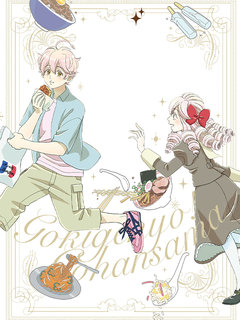
레진코믹스안녕하세요! 밥님, 영애 출신 남자의 새로운 일상 [단행본]
전국에서 내놓라하는 가문들의 영애들이 다니는 역사와 전통의 영애 학교 시라유리 학원. 아시즈시 마스미는 부친과의 약속에 따라 서민 음식은 입에도 대지 않았지만, 내심 궁금해 하고 있었다. 그런 마스미가 어느 날 깨어나보니 '남자'가 되어 있었다!?…
음식&요리힐링드라마레진코믹스에서 보기 → -
13
 카카오웹툰
카카오웹툰쌍갑포차
예상치 못한 시간, 예상치 못한 장소에 나타나는 쌍갑포차! 쌍갑포차를 운영하는 월주는 과연 누구일까? 쌍갑포차에 찾아오는 다양한 손님들의 감동적인 이야기! 한국 전통 신화 이승과 저승을, 꿈의 세계 그승과 함께 재창조한 세계관으로, 덤덤하게 써 내려…
옴니버스드라마카카오웹툰에서 보기 → · 쌍갑포차 같은 웹툰 → -
14
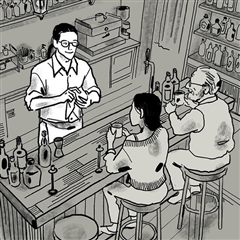
카카오웹툰인생이 레몬을 건네면 위스키를 더하라
하루의 끝, 작은 바에서 위스키 한 잔을 마시는 시간. 바텐더가 건네는 한 잔의 위스키를 사이에 두고 서로의 사연이 조용히 오간다. 누군가는 위로를 건네고, 누군가는 말없이 잔을 기울이며 혼자 눈물짓기도 한다. 인생은 때때로 레몬처럼 시리고 아린 맛…
옴니버스드라마카카오웹툰에서 보기 → -
15

-
16
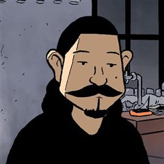
-
17
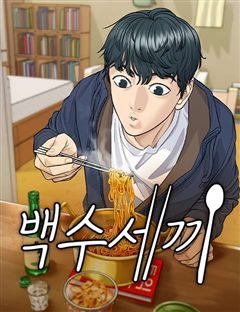
네이버웹툰백수세끼
백수 시절 내 곁을 지켜줬던 그녀... 돌아와 주면 안 되겠니? 음식 메뉴마다 담겨 있는 우리들의 연애 흑역사!
음식&요리드라마네이버웹툰에서 보기 → · 백수세끼 같은 웹툰 → -
18
 카카오웹툰
카카오웹툰던전 미식가
오랜 시간이 지나 고향에 돌아왔지만 모든 걸 잃어버린 '마롱 글라세.' 모두가 혐오하는 마물에게서만 맛을 느끼며 요리하는 기행을 벌이며, 그의 가족, 동료, 고향, 모든 걸 앗아간 드래곤에게 복수할 수 있을까?
음식&요리드라마카카오웹툰에서 보기 → -
19
 네이버웹툰
네이버웹툰설탕에 곁들인 로맨스
인생이 무(無)맛인 고등학생 찬희, 소꿉친구 소유의 도발(?)에 처음 잡아보는 도마와 식칼, 팬과 국자. 심심한 인생에 단 맛이 돌고 심장이 뛰기 시작한다! 근데 이 심장.. 소유한테 뛰는 거야? 요리가 즐거워서 뛰는 거야? 첫사랑과 꿈은 달달하게…
음식&요리드라마네이버웹툰에서 보기 → -
20
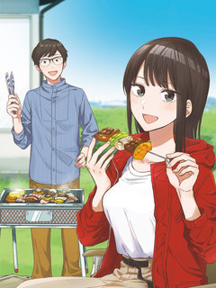
레진코믹스굽고 있는 두 사람
만남 앱을 통해 운명적으로 만난 켄타와 치히로. 너무 소심해서 처음 한 걸음을 내딛지 못하던 두 사람이 켄타의 전근을 계기로 급진전, 교제 기간 없이 결혼하기로 한다! 서로를 잘 알지도 못한 채 부부가 된 두 사람은 매주 주말 BBQ로 천천히 관계를…
음식&요리드라마레진코믹스에서 보기 →